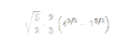

La longitud de arco es una medida de la distancia a lo largo de una curva entre dos puntos. Se puede calcular para cualquier tipo de curva, ya sea una línea recta, un círculo, una parábola, o cualquier otra forma geométrica.
Luego, elevamos al cuadrado la derivada y la sumamos a 1 bajo la raíz cuadrada en la integral:
Sustituimos el cuadrado de la derivada en la fórmula de longitud de arco y configuramos la integral. La expresión dentro de la raíz cuadrada se simplifica antes de resolver la integral
Simplificamos la expresión dentro de la raíz cuadrada:
Reescribimos la integral
Sacamos la constante de la integral
Ahora, √x puede escribirse como
Usamos la regla de la potencia para la integración
Entonces, la integral se convierte en:
Evaluamos esto desde 1 hasta 4:

Calculamos:
Sustituimos estos valores de nuevo en la integral:
Simplificamos:
Entonces, el valor de la integral es: